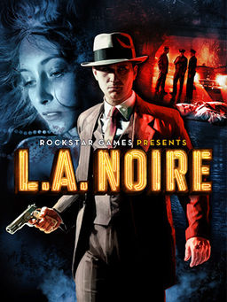

L.A. Noire, Team Bondi tarafından geliştirilmiş, Rockstar Games tarafından Microsoft Windows, PlayStation 3 ve Xbox 360 için yayımlanmış üçüncü şahıs nişancı, dedektiflik ve neo-noir türünde bir video oyunudur. Oyun, PS3 ve Xbox 360 için Kuzey Amerika'da 17 Mayıs 2011'de, Avrupa'da 20 Mayıs 2011'de, PC için ise 8 Kasım 2011'de çıkışını gerçekleştirmiştir.
1947 yılında Los Angeles'ta geçen oyun, Cole Phelps adındaki bir polis dedektifinin Los Angeles'ta suçluların peşinde verdiği mücadeleyi konu almaktadır. Hikâye tabanlı ve ilerlemeli oyunda oyuncular, suçluları yakalamak, suçları/davaları çözmek gibi görevlerde kendilerini bulmaktadır. İşlenen cinayetlerde zanlıları bulmak için delil, kanıt toplamak gibi aşamalı detaylarla birlikte oyun 40'lı yılların dedektiflik atmosferini oyunculara yaşatmaktadır.
Oyun özellikle oyun dünyasına getirdiği yeni teknolojiyle göze çarpmaktadır. Yüz yakalama teknolojisi kullanarak yaratılmış gerçekçi yüz mimikleri herkes tarafından olumlu karşılanmıştır.